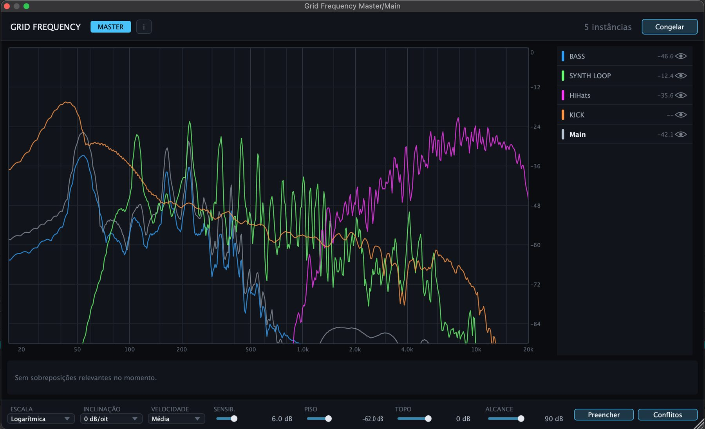
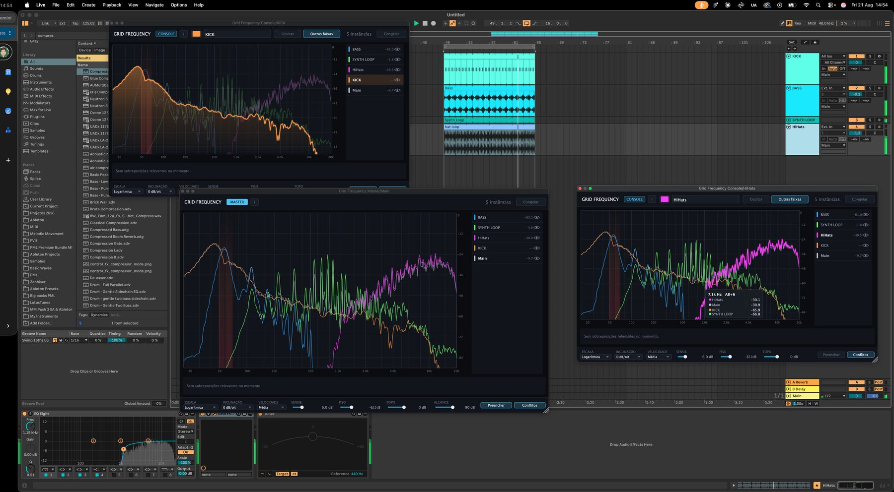

Grid Frequency
An analyser that stops looking at one track at a time. Put an instance on each track and one on the master, and every spectrum lands on the same graph — named, coloured, and with the bands where two of them are fighting marked in red. Um analisador que para de olhar uma pista por vez. Coloque uma instância em cada pista e uma no master, e todos os espectros caem no mesmo gráfico — com nome, cor, e as faixas onde duas delas estão brigando marcadas em vermelho.

What it doesO que ele faz
Masking is a relationship, so look at it as one Mascaramento é uma relação, então olhe para ele como uma
A single-track analyser can only ever tell you what one track is doing. The problem you are actually solving lives between two of them — and that is the thing Grid Frequency draws. Um analisador de uma pista só consegue dizer o que aquela pista está fazendo. O problema que você está realmente resolvendo mora entre duas delas — e é isso que o Grid Frequency desenha.
It names the pair and the band Ele diz o par e a faixa
When two tracks pile up in the same region, the range is shaded red on the graph and a
chip appears underneath with both names and the exact span — BASS × KICK, 90–107 Hz. No
hunting, no soloing back and forth: you know which two, and you know where.
Quando duas pistas se acumulam na mesma região, a faixa fica sombreada de vermelho no
gráfico e um chip aparece embaixo com os dois nomes e o intervalo exato —
BASS × KICK, 90–107 Hz. Sem caçar, sem ficar solando de um lado para o outro: você sabe
quais duas, e sabe onde.

One instance per track, one picture Uma instância por pista, um quadro só
Every instance knows about every other one, and the header counts them, so you can tell at a glance whether the session is fully wired up. Open the console on any track and you get the same graph from that track's point of view; open the one on the master and you get the whole mix. Cada instância conhece todas as outras, e o cabeçalho conta quantas são, então dá para ver de relance se a sessão está toda ligada. Abra o console de qualquer pista e você tem o mesmo gráfico do ponto de vista dela; abra o do master e você tem a mixagem inteira.

Beta accessAcesso ao beta
Get the Grid Frequency beta Pegue o beta do Grid Frequency
Leave your details and the download links appear right here. I use them to send you beta updates and nothing else. Deixe seus dados e os links de download aparecem aqui mesmo. Eu uso isso para te avisar das atualizações do beta e mais nada.
You're inPronto
Grid Frequency 1.0.0 beta, macOS only for now. Universal — it runs on Intel and Apple Silicon alike. Grid Frequency 1.0.0 beta, só macOS por enquanto. Universal — roda em Intel e Apple Silicon igual.
Grid Frequency Console
goes on every channel you want to see; Grid Frequency Master goes on the master bus and
draws them all together. Install both — apart, neither does anything.
O download traz dois plugins. O Grid Frequency Console vai
em cada canal que você quer ver; o Grid Frequency Master vai no canal master e desenha
todos juntos. Instale os dois — separados, nenhum faz nada.
- Unzip the download. You get two plugins, not one: Grid Frequency Console.vst3 and Grid Frequency Master.vst3. Both have to be installed — they are useless apart. Descompacte o download. Você recebe dois plugins, não um: Grid Frequency Console.vst3 e Grid Frequency Master.vst3. Os dois precisam ser instalados — separados eles não servem para nada.
-
Open the VST3 folder:
~/Library/Audio/Plug-Ins/VST3/. Finder hides the Library folder, so you will not find it by clicking around — use ⇧⌘G, the Go → Go to Folder menu item, then paste that path and press Enter. Abra a pasta VST3:~/Library/Audio/Plug-Ins/VST3/. O Finder esconde a pasta Library (ela aparece como "Biblioteca"), então você não chega nela clicando — use ⇧⌘G, que é o menu Ir → Ir para a pasta, cole esse caminho e dê Enter. -
Drop both
.vst3bundles in there. Solte os dois bundles.vst3lá dentro. - Rescan your plugins in the DAW. Both show up under the manufacturer Nowhr Dynamics, as audio effects. Put Console on every channel you want to see, and Master on the master bus. Mande o DAW reescanear os plugins. Os dois aparecem sob o fabricante Nowhr Dynamics, como efeitos de áudio. Coloque o Console em cada canal que você quer ver, e o Master no canal master.
.zip, and your DAW may skip them during the scan without saying a word. Run this once in
Terminal, after copying:
Este passo não é opcional. Os plugins têm assinatura ad-hoc — sem
Developer ID da Apple, sem notarização — então o macOS coloca em quarentena tudo que sai de um
.zip baixado, e a sua DAW pode ignorá-los na varredura sem avisar nada. Rode isto uma
vez no Terminal, depois de copiar:
xattr -dr com.apple.quarantine ~/Library/Audio/Plug-Ins/VST3/Mini manualMini manual
Setting it up, and reading it Como montar, e como ler
1. Setting it up1. Montando
Grid Frequency is an audio effect, and it only earns its keep when there is more than one of it. The layout it is built for: O Grid Frequency é um efeito de áudio, e ele só se paga quando há mais de um. O arranjo para o qual ele foi feito:
- Put one instance at the end of each track you care about — kick, bass, synths, hats. It leaves the audio alone; it only listens. Coloque uma instância no fim de cada pista que te interessa — kick, baixo, sintetizadores, hats. Ele não mexe no áudio; só escuta.
- Put one on the master bus. That one opens in MASTER mode and shows every track at once; the ones on the tracks open in CONSOLE mode. Coloque uma no master. Essa abre em modo MASTER e mostra todas as pistas de uma vez; as das pistas abrem em modo CONSOLE.
-
Name each console — the field next to the mode badge — and give it a colour. Those
are the names and colours you will read on every graph, so name them the way you think:
KICK,BASS,SYNTH LOOP,HiHats. Dê nome a cada console — o campo ao lado do selo de modo — e escolha uma cor. São esses nomes e cores que você vai ler em todo gráfico, então nomeie do jeito que você pensa:KICK,BASS,SYNTH LOOP,HiHats.
The header shows how many instances are talking to each other —
5 instâncias in the shots on this page. If that number is lower than the number of
consoles you placed, one of them is on a track the transport is not feeding.
O cabeçalho mostra quantas instâncias estão conversando entre si —
5 instâncias nos prints desta página. Se esse número for menor que o de consoles que
você colocou, algum deles está numa pista que o transporte não está alimentando.
2. Reading the graph2. Lendo o gráfico
Frequency runs left to right, 20 Hz to 20 kHz. Level runs top
to bottom, 0 dB down to the bottom of the window. Every track is one curve, in its own
colour, all on the same axes — which is the whole point: you are comparing them, not inspecting one
of them.
A frequência vai da esquerda para a direita, de 20 Hz a
20 kHz. O nível vai de cima para baixo, de 0 dB até o fundo da janela.
Cada pista é uma curva, na cor dela, todas nos mesmos eixos — que é a ideia toda: você está
comparando, não inspecionando uma só.
- The track whose window you are in is drawn thick and filled; the others sit behind it, dimmer. That is how you keep your bearings with six curves on screen. A pista da janela em que você está é desenhada grossa e preenchida; as outras ficam atrás, mais apagadas. É assim que você não se perde com seis curvas na tela.
-
Hover anywhere on the graph and you get a readout: the frequency, the nearest
note name with its cents offset —
7.1 kHz · A8+6— and every track's level at that exact point, sorted loudest first. Passe o mouse em qualquer ponto do gráfico e aparece a leitura: a frequência, o nome da nota mais próxima com o desvio em cents —7.1 kHz · A8+6— e o nível de cada pista naquele ponto exato, do mais alto para o mais baixo. - The note name is there because tuning problems and masking problems look identical on a plain analyser. If your bass peak reads as a note that is not in the key, that is a different conversation from a peak that is simply too loud. O nome da nota está ali porque problema de afinação e problema de mascaramento são idênticos num analisador comum. Se o pico do seu baixo cai numa nota que não é da tonalidade, essa é outra conversa, diferente de um pico que só está alto demais.
3. The track list3. A lista de pistas
Down the right-hand side, one row per instance. Each row carries: Na lateral direita, uma linha por instância. Cada linha traz:
| ElementElemento | What it isO que é |
|---|---|
| Colour chipChip de cor | The colour that track's curve is drawn in. Set it on that track's console. A cor com que a curva daquela pista é desenhada. Definida no console da pista. |
| NameNome | What you typed on that console. The row for the window you are in is shown in bold. O que você digitou naquele console. A linha da janela em que você está aparece em negrito. |
| LevelNível |
That track's current level, live. A row reading -- is a track that is
not playing anything right now.
O nível atual da pista, ao vivo. Uma linha marcando -- é uma pista que
não está tocando nada no momento.
|
| EyeOlho | Show or hide that curve. With eight tracks running, hiding the four you are not thinking about is what makes the graph readable again. Mostra ou esconde aquela curva. Com oito pistas rodando, esconder as quatro em que você não está pensando é o que torna o gráfico legível de novo. |
On a track console, Ocultar (hide) and Outras faixas (other tracks) do the same job in one press: drop this track's curve out of the picture, or stop drawing everyone else's so you are left alone with your own. Num console de pista, Ocultar e Outras faixas fazem o mesmo trabalho num toque só: tirar a curva desta pista do quadro, ou parar de desenhar a das outras para você ficar sozinho com a sua.
4. Conflicts4. Conflitos
This is the part a normal analyser cannot do. When two tracks are both putting significant energy into the same narrow band, Grid Frequency shades that band red on the graph and writes a chip underneath naming both tracks and the range: Esta é a parte que um analisador comum não faz. Quando duas pistas estão colocando energia significativa na mesma faixa estreita, o Grid Frequency sombreia essa faixa de vermelho no gráfico e escreve um chip embaixo com o nome das duas e o intervalo:
BASS x KICK
90 - 107 Hz
When nothing is stepping on anything else, the strip reads
Sem sobreposições relevantes no momento — no relevant overlaps right now. Two things
are worth taking from that wording: it is about this moment, so it changes as the
arrangement changes; and relevant is set by you, through
Sensib. and Piso below.
Quando nada está pisando em nada, a faixa diz
Sem sobreposições relevantes no momento. Duas coisas valem tirar dessa frase: é sobre
este momento, então muda conforme o arranjo muda; e o que é relevante quem define é
você, pelos controles Sensib. e Piso abaixo.
The Conflitos button turns the whole detection on and off. Leave it on while you are balancing, turn it off when you just want to look at spectra without the red. O botão Conflitos liga e desliga a detecção inteira. Deixe ligado enquanto você equilibra, desligue quando quiser só olhar os espectros sem o vermelho.
5. The display controls5. Os controles de exibição
Along the bottom of every window, the same row in master and console alike. Na parte de baixo de toda janela, a mesma linha no master e nos consoles.
| ControlControle | DefaultPadrão | What it changesO que muda |
|---|---|---|
| ESCALA | Logarítmica | How the frequency axis is spaced. Logarithmic gives every octave the same width, which is how hearing works and what you want almost always. Como o eixo de frequência é distribuído. Logarítmica dá a mesma largura a cada oitava, que é como a audição funciona e o que você quer quase sempre. |
| INCLINAÇÃO | 0 dB/oit |
Tilt. Real music falls off with frequency, so at 0 dB/oct the highs
always look weak. Adding tilt (the usual choices are 3 or 4.5 dB/oct) straightens a
well-balanced mix into a roughly flat line, which makes anything sticking out obvious.
Inclinação. Música real cai conforme a frequência sobe, então em
0 dB/oit os agudos sempre parecem fracos. Adicionando inclinação (as escolhas
comuns são 3 ou 4,5 dB/oit) uma mixagem equilibrada vira quase uma reta, e aí o que sobra
salta aos olhos.
|
| VELOCIDADE | Média | How fast the curves react. Fast follows transients and jumps around; slow averages into something you can actually read. Medium is the compromise. Quão rápido as curvas reagem. Rápido acompanha transientes e pula muito; lento calcula uma média que dá para ler. Média é o meio-termo. |
| SENSIB. | 6.0 dB | How much overlap counts as a conflict. Lower it and only serious collisions get flagged; raise it and the plugin gets fussier. Quanta sobreposição conta como conflito. Abaixe e só colisões sérias são marcadas; suba e o plugin fica mais exigente. |
| PISO | −62.0 dB | The floor below which signal is ignored. This is what keeps room tone, reverb tails and bleed from being reported as a conflict. O piso abaixo do qual o sinal é ignorado. É o que impede que ruído de sala, cauda de reverb e vazamento sejam reportados como conflito. |
| TOPO | 0 dB | The level at the top of the window. O nível no topo da janela. |
| ALCANCE | 90 dB | How many dB the window covers from top to bottom. Together with TOPO this frames the vertical axis — narrow it to magnify small differences, widen it to see quiet tails. Quantos dB a janela cobre de cima a baixo. Junto com o TOPO, isso enquadra o eixo vertical — estreite para ampliar diferenças pequenas, alargue para ver caudas baixas. |
| Preencher | — | Fill. Shades the area under each curve instead of drawing the line alone. Good for two or three tracks, unreadable for eight. Preenche a área embaixo de cada curva em vez de desenhar só a linha. Bom para duas ou três pistas, ilegível para oito. |
| Conflitos | — | Turns conflict detection and the red bands on and off. Liga e desliga a detecção de conflito e as faixas vermelhas. |
| Congelar | — | Freeze, top right. Holds the picture still so you can measure it, read the chips, or compare against what you get after an EQ move. Congela, no canto superior direito. Segura o quadro parado para você medir, ler os chips, ou comparar com o que aparece depois de um movimento de EQ. |
6. A way to work6. Um jeito de trabalhar
- Loop the busiest eight bars of the track — the drop, the last chorus, whatever has everything playing at once. Conflicts are about density, so analyse the dense part. Faça loop dos oito compassos mais cheios da música — o drop, o último refrão, o que tiver tudo tocando junto. Conflito é sobre densidade, então analise a parte densa.
- Open the master view and let it run. Set INCLINAÇÃO to 3 dB/oct so a balanced mix reads flat, then look at the overall shape before looking at any detail. Abra a visão master e deixe rodar. Coloque a INCLINAÇÃO em 3 dB/oit para uma mixagem equilibrada ficar reta, e olhe a forma geral antes de olhar qualquer detalhe.
- Read the conflict chips. Take the lowest band first — low-frequency collisions eat the most headroom, and fixing one often clears two others further up. Leia os chips de conflito. Comece pela faixa mais grave — colisões nos graves comem mais headroom, e resolver uma costuma limpar outras duas mais acima.
- Decide who owns the band, then make the move on the other track: a narrow cut, a high-pass, a sidechain, or simply a different sound. Grid Frequency does not do EQ — it tells you where to point yours. Decida quem manda naquela faixa, e faça o movimento na outra pista: um corte estreito, um high-pass, um sidechain, ou simplesmente outro som. O Grid Frequency não faz EQ — ele diz para onde apontar o seu.
- Congelar before and after, and compare. It is the cheapest way to check that the move did what you thought it did. Use o Congelar antes e depois, e compare. É o jeito mais barato de conferir se o movimento fez o que você achou que fez.
7. If something looks off7. Se algo parecer errado
| SymptomSintoma | Try thisTente isso |
|---|---|
| A track is missing from the list Falta uma pista na lista | Check the instance count in the header against how many consoles you placed. A console on a muted or frozen track has nothing to report. Compare a contagem de instâncias no cabeçalho com quantos consoles você colocou. Um console numa pista mutada ou congelada não tem o que reportar. |
| Every band is flagged red Todas as faixas ficam vermelhas | Lower SENSIB. and raise PISO. The defaults are a starting point, not a verdict. Abaixe a SENSIB. e suba o PISO. Os padrões são um ponto de partida, não um veredito. |
| Nothing is ever flagged Nunca marca nada | Make sure Conflitos is on, that the transport is running, and that you are looking at a busy section rather than an intro. Confira se Conflitos está ligado, se o transporte está rodando, e se você está olhando uma parte cheia e não uma intro. |
| The highs always look weak Os agudos sempre parecem fracos |
That is what real music looks like at 0 dB/oit. Add tilt with
INCLINAÇÃO.
É assim que música de verdade aparece em 0 dB/oit. Adicione inclinação
com a INCLINAÇÃO.
|
| The graph is unreadable O gráfico está ilegível | Turn Preencher off and hide the tracks you are not working on with the eye icons. Desligue o Preencher e esconda com os olhos as pistas em que você não está trabalhando. |
| Something elseOutra coisa | It is a beta — write to me with the DAW, the system and what you did. É um beta — escreva para mim com o DAW, o sistema e o que você fez. |